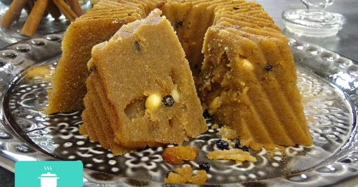

Halvas (semolina dessert)

Description
A dessert that comes from the Middle-East, but well loved and well known to the Greek cuisine. The recipe is as simple as 1-2-3-4 (1 part olive oil, 2 parts semolina, 3 parts sugar, 4 parts water), but it is equally easy to fail. Small details will elevate this dessert to another level.
Ingredients
- 1 cup olive oil
- 1 cup semolina (coarse)
- 1 cup semolina (thin)
- 2 1/2 cups crystallized sugar
- 4 cups of water
- 1/2 cup black raisins
- 1/2 cup roast almonds (whole)
- rind of 1 lemon
- 1 tsp cinnamon powder
- 1 cinnamon stick
Method
- Prepare the syrup: In a saucepan, place the water, sugar, lemon rind and cinnamon stick on low heat.
- Stir until the sugar is completely dissolved and bring to the boil.
- Remove from the heat and allow to cool down.
- Add the olive oil to a wide based pot and turn the heat to medium-high.
- When hot (not burned!) add both the thin and the coarse semolina.
- Roast the semolina on medium-high heat until it turns golden-brown and releases its aroma. Do not burn, as it will turn bitter.
- Towards the end, stir in the cinnamon powder, the raisins, and the almonds.
- Gradually and VERY CAREFULLY (it splashes and burns), add the prepared syrup to the pot and stir.
- Continue stirring on low heat, until the mixture takes a dough-like appearance and comes off the walls of the pot on its own.
- Remove the cinnamon stick and the lemon rind.
- While still hot, transfer to a cake pan (or similar container - be creative) and press with a wooden spoon to remove any pockets of air.
- Allow to cool for 30 minutes before serving.